Native iOS (build 5) vs the deployed web app · iPhone 17 Pro (1206×2622) · captured 21 Jun 2026 · 11/12 screens still diverge — this is the live parity punch-list.
Native captures the tab row and paste-order banner but materially diverges: real product photos are replaced by letter avatars, the filter search bar and sticky bottom CTA are missing, the price/vendor/"price missing" row model differs, and the header title/subtitle/action-icons don't match.
WEB APP (source of truth)
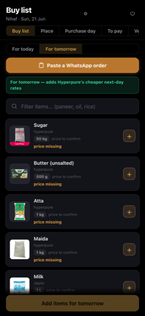
NATIVE iOS (build 5)
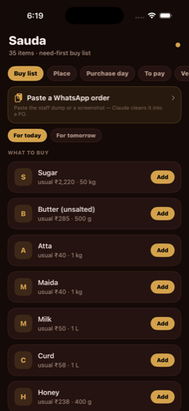
highimagery — PWA renders real product thumbnails per row (Sugar bag with a red 'Low Price' badge, Butter pack, Atta pack, Maida bag, Milk carton). Native renders single-letter colored avatars (S, B, A, M, M, C, H) with no photo and no price badge. → Replace the letter-avatar view with an AsyncImage thumbnail bound to the same item image URL the PWA uses; fall back to the letter avatar only when no image exists. Add the red 'Low Price' corner badge overlay when the item carries that flag.
highmissing-section — PWA has a 'Filter items… (paneer, oil, rice)' search field with a magnifier icon directly under the banner. Native has no search/filter control — it goes straight to a 'WHAT TO BUY' section header. → Add a search TextField above the item list with the same placeholder ('Filter items… (paneer, oil, rice)') and magnifier glyph, wired to live-filter the rows.
highmissing-section — PWA has a sticky bottom CTA bar 'Add items for tomorrow' (label changes with the day toggle). Native shows no bottom action bar. → Add a pinned bottom bar with a full-width button whose label follows the selected day ('Add items for today/tomorrow'), matching the PWA's amber-tinted style.
highcontrol — Per-row add control differs: PWA uses a square bordered '+' stepper button; native uses a pill-shaped solid amber 'Add' text button. → Switch the row trailing control to the square bordered '+' stepper to match the PWA, or confirm with owner the 'Add' pill is the intended native adaptation.
highmissing-section — Row data model differs. PWA row shows: vendor name (hyperpure/zepto), a bordered quantity chip (e.g. '50 kg'), 'price to confirm' text, and a red 'price missing' status line. Native row shows 'usual ₹2,220 · 50 kg' (a usual-price + qty string) with no vendor and no 'price missing' state. → Render the PWA's fields: vendor source line, quantity as a bordered chip, 'price to confirm', and the red 'price missing' status when price is absent. If native intentionally surfaces a 'usual' baseline price instead, confirm this is a deliberate native enhancement, otherwise align to the PWA fields.
medlabel — Header title/subtitle differ. PWA title is 'Buy list' with subtitle 'Nihaf · Sun, 21 Jun'. Native title is 'Sauda' with subtitle '35 items · need-first buy list'. → Match the PWA header: title 'Buy list', subtitle showing the user name and current date ('Nihaf · Sun, 21 Jun'). If 'Sauda' is the intended app-level title, move 'Buy list' into the header subtitle/section so the screen reads the same.
medcontrol — PWA has two top-right header icons (a target/recenter glyph and a power/logout glyph). Native header has no top-right action icons (only a small amber status dot). → Add the two header actions (refresh/recenter and logout/power) to the native nav bar to match the PWA, wired to the same handlers.
medmissing-section — PWA banner's secondary line is a green-tinted strip 'For tomorrow — adds Hyperpure's cheaper next-day rates' below the day toggle. Native shows no such contextual day-explainer strip; instead its paste banner carries an inline descriptive subtitle and a chevron. → Add the green contextual strip under the day toggle that explains the selected day's pricing behavior ('For tomorrow — adds Hyperpure's cheaper next-day rates' / today equivalent).
lowlayout — Tab row visual treatment differs: native renders the tabs as filled rounded amber/brown pills; PWA renders them as a flat underlined tab strip with the active tab underlined. → Confirm intended style. If parity is required, switch native tabs to an underlined active-tab strip to match the PWA; otherwise accept the pill style as a native adaptation.
lowstate — Paste-order banner copy differs slightly. Native: 'Paste a WhatsApp order' + subtitle 'Paste the staff dump or a screenshot — Claude cleans it into a PO' with a chevron. PWA: 'Paste a WhatsApp order' button only (no inline subtitle). → Minor — align the banner so both show the same primary label and either both carry the helper subtitle or neither does. Recommend keeping the helper subtitle and adding it to the PWA, or drop it from native for 1:1.
SAUDA · Place
✗ mismatch
Core structure (tabs, brand toggle, Today/Tomorrow, search, vendor list) is reproduced, but native diverges materially on the date control, vendor-row meta styling, the bottom Place-order CTA, and several cosmetic treatments.
WEB APP (source of truth)
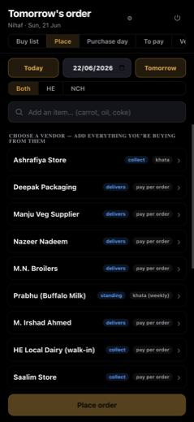
NATIVE iOS (build 5)
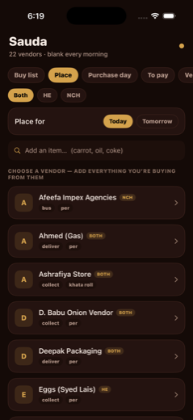
highcontrol — PWA shows a three-control date row: [Today] segment + an explicit DATE FIELD ("22/06/2026" with a calendar-picker icon) + [Tomorrow] segment. Native replaces this with a 'Place for' label + only [Today]/[Tomorrow] pills inside a card — there is NO visible date field or calendar-picker control. The user cannot see or pick an explicit date on native. → Add the explicit date field with calendar icon between the Today and Tomorrow controls, matching the PWA. Render the resolved date (e.g. 22/06/2026) and make it tappable to open a date picker.
highmissing-section — PWA has a persistent bottom 'Place order' CTA button (full-width, brand-gold). Native has no bottom action button at all — the vendor list runs to the bottom edge. → Add the fixed bottom 'Place order' primary button (full-width, brand-gold fill, dark text) pinned above the safe area, matching the PWA.
medlayout — Vendor rows differ structurally. PWA rows are flat list items separated by hairline dividers, with the vendor name on the left and the fulfilment badge + payment-term text right-aligned on the SAME line (e.g. 'collect' badge + 'khata'/'pay per order'). Native renders each vendor as a rounded CARD with a letter avatar on the left, the badge inline after the name, and the meta (e.g. 'collect per') BELOW the name on a second line. → Decide one canonical layout. To match PWA: switch from card rows to flat divider-separated rows, drop the letter avatars, and move the fulfilment badge + payment term to a right-aligned cluster on the name line.
highlabel — Vendor payment-term text is truncated/placeholder on native. PWA shows real terms ('khata', 'pay per order', 'khata (weekly)', 'standing'). Native shows bare fragments like 'per', 'bus per', 'deliver per', 'collect per' — the term wording is incomplete/wrong (e.g. 'pay per order' rendered as just 'per', 'delivers' rendered as 'deliver'). → Fix the meta-string formatting so native renders the full fulfilment verb ('delivers'/'collect'/'standing') and full payment term ('pay per order','khata','khata (weekly)') instead of truncated tokens.
medimagery — Native shows letter avatars (A/D/E circles) per vendor row; PWA shows NO avatars/thumbnails at all — vendor name starts at the left edge. → Remove the letter avatars to match the PWA, OR if avatars are an intentional native enhancement, confirm and accept; but as-is this is a treatment divergence from the PWA.
lowcolor — Fulfilment badges differ in color/shape. PWA badges are blue/indigo pills (e.g. 'collect','delivers','standing'). Native badges (NCH/BOTH/HE brand tags + the inline term) are gold/amber. The PWA's brand-scope is implicit; native surfaces a gold brand tag (NCH/BOTH/HE) per row that the PWA does not show on each row. → Align badge colors: use the PWA's blue fulfilment-pill style, and reconsider the per-row gold brand tag (PWA filters by the top toggle instead of tagging each row).
lowlabel — Header treatment differs. PWA title is 'Tomorrow's order' with subtitle 'Nihaf · Sun, 21 Jun' and a settings gear + power icon top-right. Native title is the static 'Sauda' with subtitle '22 vendors · blank every morning' and a single dot indicator top-right. (Title text is partly state-driven, but the subtitle content and top-right controls structurally differ.) → Match the PWA header: dynamic title reflecting the selected day, user+date subtitle, and the gear/power top-right controls (or confirm native's app-shell header is intentional).
lowstate — Brand toggle order/active state: both show [Both][HE][NCH]; native shows 'Both' active (gold). The PWA toggle pill styling is a thin segmented control; native uses larger filled pills. Cosmetic only. → Match segmented-control styling (slimmer pills, single highlighted segment) if exact parity is required.
SAUDA · Purchase day
✗ mismatch
Native ports the Purchase day tab but diverges materially on the header treatment, date-navigation controls, brand-filter set, and a missing A4-PDF action — several gaps are structural, not data-state.
WEB APP (source of truth)
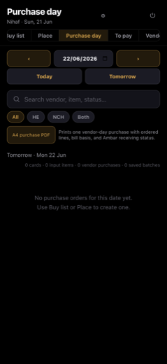
NATIVE iOS (build 5)
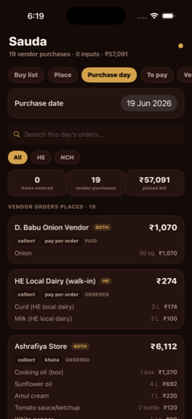
highmissing-control — PWA exposes a prominent 'A4 purchase PDF' action button with an explanatory caption ('Prints one vendor-day purchase with ordered lines, bill basis, and Ambar receiving status.'). Native has NO A4 PDF print control anywhere on the Purchase day screen. This is a core vendor-day output and is independent of date/data state. → Add an 'A4 purchase PDF' button (gold outline pill, matching native chip style) below the brand filter row, with the same caption text, wired to the per-vendor-day print/export action.
highcontrol — Date navigation differs structurally. PWA: a three-part date bar (‹ prev arrow | date field showing 22/06/2026 with a native date-picker icon | › next arrow) PLUS quick-jump 'Today' and 'Tomorrow' buttons. Native: a single 'Purchase date' row with a static pill ('19 Jun 2026') and NO prev/next arrows, NO Today/Tomorrow quick buttons, and no visible calendar-picker affordance. → Replace the static date pill with the PWA's date-stepper: add ‹ / › arrow buttons flanking a tappable date field (opening a native date picker), and add 'Today' + 'Tomorrow' quick-jump buttons in a row beneath it.
medcontrol — Brand filter chip set differs. PWA shows four chips: All / HE / NCH / Both. Native shows only three: All / HE / NCH (no 'Both' chip). Vendors serving both brands exist (rows show 'BOTH' badges), so the 'Both' filter is meaningful and missing. → Add a fourth 'Both' filter chip after NCH, matching the existing chip styling and filtering rows whose scope is BOTH.
medmissing-section — Native lacks a date-context subline. PWA prints a 'Tomorrow · Mon 22 Jun' contextual line and a counts summary string '0 cards · 0 input items · 0 vendor purchases · 0 saved batches' directly under the filters. Native shows counts only as three stat tiles (items entered / vendor purchases / placed bill) and omits the relative-day label and the 'cards'/'saved batches' counts. → Either add a relative-day subline (e.g. 'Wed · 19 Jun') and align the counts summary to include cards + saved batches, or confirm the stat-tile treatment is the intended native adaptation and accept the simplified count set.
medmissing-state — Empty-state copy not verifiable as present on native. PWA shows a centered empty state 'No purchase orders for this date yet. Use Buy list or Place to create one.' Native (pinned to a date with data) never reveals its empty state, so parity of the zero-orders message is unconfirmed and may be missing or worded differently. → Verify native renders an equivalent empty state on a no-data date; if absent or differently worded, add the same two-line guidance copy pointing the user to Buy list / Place.
lowheader — Header treatment differs. PWA title is 'Purchase day' (matches the active tab) with a subline 'Nihaf · Sun, 21 Jun' plus a gear (settings) icon and a power (sign-out) icon top-right. Native title is the app name 'Sauda' with a subline of live stats ('19 vendor purchases · 0 inputs · ₹57,091') and a single status dot top-right — no gear/power icons. → Decide intended header identity: if matching PWA, set the screen title to the active tab name and add gear + power icons; the stats subline is an acceptable native enrichment but the settings/sign-out affordances should be reachable. At minimum surface settings and sign-out somewhere on native.
lowimagery — Neither side shows vendor/item photo thumbnails — both use text-only rows (no letter avatars on native, no photos on PWA). No imagery delta. Vendor rows on native use a leading bold vendor name with a scope badge (BOTH/HE) and status chips (collect / pay per order / PAID|ORDERED|khata); PWA empty state can't be compared row-for-row. → Accept — no imagery divergence. Confirm row chip styling (collect/khata/pay-per-order/PAID) matches PWA once PWA has data to compare.
SAUDA · To pay
✗ mismatch
Native is missing the entire filter layer (search bar, brand chips, status chips) and uses the wrong header title/treatment, so the To-pay screen is structurally far thinner than the PWA even though both end in the same empty state.
WEB APP (source of truth)NATIVE iOS (build 5)
highmissing-section — PWA shows a full-width search field 'Search vendor, item, amount...' with a magnifier icon directly under the tab strip. Native has no search bar at all. → Add the search TextField (rounded ~#1c1c1e fill, magnifier glyph, placeholder 'Search vendor, item, amount...') as the first element below the tab bar, full content width.
highmissing-section — PWA shows a brand-filter chip row: All / HE / NCH / Both, with 'All' selected (amber outline). Native has no brand filter row. → Add the brand segmented chip row (All/HE/NCH/Both) below the search bar; default-select 'All' with amber outline/fill, others as dark pill chips.
highmissing-section — PWA shows a status-filter chip row: All / Ready / Needs bill / Khata / Manual rail, with 'All' and 'Needs bill' shown in amber. Native has no status filter row. → Add the status chip row (All/Ready/Needs bill/Khata/Manual rail) below the brand row, matching selected-state amber outlines.
highlabel — Header title differs: PWA title is 'To pay' (the active section name); native title is 'Sauda' (the app name). → Set the screen header title to the active tab label ('To pay') rather than the static app name, matching the PWA pattern where the title reflects the selected section.
medlabel — Header subtitle differs: PWA subtitle is a context line 'Nihaf · Sun, 21 Jun' (user + date); native subtitle is 'Nothing waiting for payment' (a status/empty-state echo). → Change the header subtitle to the user + date context line (e.g. 'Nihaf · Sun, 21 Jun'); do not put the empty-state message in the subtitle.
medcontrol — PWA header has two top-right controls: a settings gear and a power/logout icon. Native header shows only a small amber dot, no gear or power control. → Add the gear (settings) and power (logout) icon buttons to the top-right of the header; remove or repurpose the lone amber dot.
medlayout — Tab strip styling differs. PWA tabs are boxed/segmented cells with visible dividers and the active 'To pay' tab gets an amber-tinted filled box. Native tabs are free-floating rounded pills with the active 'To pay' as a solid amber pill. → Match the PWA tab treatment: segmented box cells with separators, active tab as amber-tinted filled cell with amber text (not a fully solid amber pill).
lowlayout — Tab order/visible set differs at the edges: PWA window shows ...ce | Purchase day | To pay | Vendor diary | Hy..., while native shows Buy list | Place | Purchase day | To pay | Ve... — native scroll position is further left. Likely just scroll offset but confirm full tab list/order matches. → Verify the native tab list order matches PWA exactly (Buy list, Place, Purchase day, To pay, Vendor diary, Hyper...); on entering To pay, scroll the strip so the active tab is centered/visible as the PWA does.
lowcolor — Background tone differs: native uses a warm dark-brown canvas; PWA uses a near-black neutral canvas. Chip and field fills are correspondingly browner in native vs neutral grey in PWA. → Align the screen background and surface fills to the PWA's neutral near-black palette (#000/#0e0e0e canvas, #1c1c1e surfaces) instead of the brown-tinted theme.
lowstate — Empty-state text matches in wording ('Nothing waiting for payment.') and placement (centered), but in native it appears immediately under the tabs because the filter layer is absent; in PWA it sits lower, below the filter chips. → Once the search + chip rows are added, the empty-state message will naturally drop to the correct vertical position below them; keep the same centered grey caption styling.
SAUDA · Vendor diary
✗ mismatch
PWA screenshot is stuck on "Loading..." so the vendor-row body can't be compared; the visible header/tabs/search differ materially (title, subtitle, top-right controls, tab style and labels, search copy).
WEB APP (source of truth)NATIVE iOS (build 5)
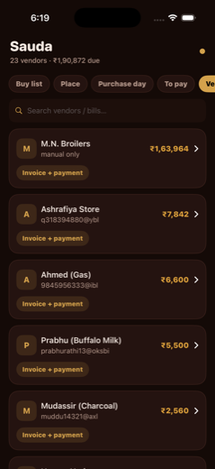
highmissing-section — PWA reference is captured mid-load (body shows 'Loading...'), so the rendered vendor list — the core of this screen — is not visible in the PWA shot. Native shows a full vendor list (M.N. Broilers, Ashrafiya Store, etc.) with no PWA counterpart to verify against. Parity of rows (avatars, due amounts, 'Invoice + payment' chips) cannot be confirmed from this capture. → Re-capture the PWA vendordiary screenshot after the list finishes loading (wait for network idle / list render) so a true row-level diff can be run. This is a capture artifact, not necessarily a native defect.
highlabel — Header title differs: native shows 'Sauda' (global app title); PWA shows 'Vendor diary' (per-screen title). → Native header should render the active screen's title 'Vendor diary' (matching the selected tab), not the static app name 'Sauda'.
medlabel — Header subtitle differs: native shows a data summary '23 vendors · ₹1,90,872 due'; PWA shows user + date 'Nihaf · Sun, 21 Jun'. → Decide intended subtitle. If matching PWA, native should show 'Nihaf · <day, date>'. If the data summary is an intentional native enhancement, accept — but confirm against PWA once the loaded capture is available.
highcontrol — Top-right header controls differ: PWA has a gear (settings) icon and a power/sign-out icon; native shows only a small amber dot indicator and no settings or power controls. → Add the settings (gear) and power/sign-out icon buttons to the native header top-right to match the PWA, wired to the same actions.
highcontrol — Tab control style differs: PWA uses a segmented underlined tab bar with the active tab in amber text on a dark fill; native uses rounded pill chips with the active pill in solid amber. Different control idiom. → Restyle native tabs to the PWA segmented-tab treatment (underline/active-fill, amber active label) instead of pill chips, or confirm pills are the intended native adaptation.
medlabel — Tab labels differ between the two captures. Native shows 'Buy list, Place, Purchase day, To pay, Ve...'; PWA shows '...se day, To pay, Vendor diary, Hyperpure, C...'. PWA includes 'Vendor diary' and 'Hyperpure' tabs not visible in the native strip; native shows 'Buy list' and 'Place' not visible in PWA. → Reconcile the tab set and order so native exposes the same tabs (including 'Vendor diary' and 'Hyperpure') with identical labels and ordering as the PWA.
medlabel — Search placeholder copy differs: native 'Search vendors / bills...'; PWA 'Search vendor, item, invoice... (Afeefa, T-431)' (richer hint with example tokens). → Match native search placeholder to the PWA string, including the example-token hint '(Afeefa, T-431)', so the searchable scope (vendor/item/invoice) is communicated identically.
SAUDA · Hyperpure
✗ mismatch
Native reproduces the row data but loses the PWA's product photo thumbnails (uses letter avatars instead), drops the filter search bar, the per-row tick-off control, the pack/qty metadata line, and the price-strikethrough — the screen materially diverges in both structure and visual treatment.
WEB APP (source of truth)
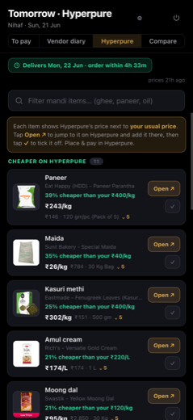
NATIVE iOS (build 5)
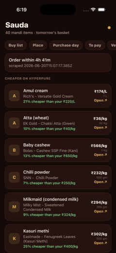
highimagery — PWA shows real product photo thumbnails on every row (Paneer pack shot, Maida bag, Kasuri methi box, Amul cream tub, Moong dal pack). Native replaces each with a colored letter-avatar tile (A, M, B, C, M, K). This is the single biggest visual divergence — native looks like a generic list, PWA looks like a product catalog. → Render the Hyperpure product image (the same image URL the PWA uses) as the row leading thumbnail; fall back to the letter avatar only when no image is available.
highmissing-section — PWA has a 'Filter mandi items… (ghee, paneer, oil)' search input directly under the chip row. Native has no search/filter field at all. → Add the same filter text field above the 'CHEAPER ON HYPERPURE' list, wired to filter the rows client-side, with matching placeholder copy.
highcontrol — Each PWA row has a trailing tick/checkmark button (the 'tap ✓ to tick it off' affordance described in the explainer banner) next to/under the 'Open ↗' button. Native rows show only the 'Open ↗' link and no tick-off control. → Add the trailing tick-off (✓) button per row alongside Open ↗, wired to the same tick-off state the PWA uses.
medmissing-section — PWA shows an explainer banner: 'Each item shows Hyperpure's price next to your usual price. Tap Open ↗ to jump to it on Hyperpure and add it there, then tap ✓ to tick it off. Place & pay in Hyperpure.' Native's banner instead shows 'Order within 4h 41m / scraped 2026-06-20T15:07:17.385Z' — a different, more technical banner with no usage instructions. → Replace/supplement the native banner with the PWA's instructional copy; move the raw scrape timestamp out of the primary banner (or into a subtle 'prices Xh ago' caption like the PWA).
medmissing-section — PWA shows a green delivery/status pill 'Delivers Mon, 22 Jun · order within 4h 33m' as a distinct chip above the prices caption. Native folds the countdown into the brown banner only and has no green delivery pill. → Add the green delivery-status pill above the list matching the PWA layout and color.
medmissing-section — PWA each row shows a pack/qty metadata line with strikethrough usual price, e.g. '₹146 · 120 gm/pc (Pack of 5)', '₹784 · 30 Kg Bag', plus a small '5' badge (qty/count). Native shows only a plain right-aligned qty like '1 L', '30 kg', '500 gm' with no strikethrough usual price and no count badge. → Add the secondary metadata line per row: struck-through usual price + pack/size description + the count badge, matching the PWA row composition.
medlabel — Header title differs. PWA top title is 'Tomorrow · Hyperpure' with 'Nihaf · Sun, 21 Jun' subtitle and the screen is a tab within a top tab bar (To pay / Vendor diary / Hyperpure / Compare). Native shows a large 'Sauda' app title with '40 mandi items · tomorrow's basket' subtitle and a horizontally-scrolling chip row (Buy list / Place / Purchase day / To pay / Ve…). → Match the PWA's per-screen header: title 'Tomorrow · Hyperpure', name+date subtitle, and align the section/tab nomenclature so 'Hyperpure' reads as the active tab, not a chip in a different nav model.
medcontrol — Navigation model differs. PWA uses a 4-item top tab bar (To pay / Vendor diary / Hyperpure / Compare) with the active tab highlighted brown. Native uses a scrolling pill/chip row with different items (Buy list, Place, Purchase day, To pay, Ve…) and no clearly highlighted active tab. → Reconcile the native nav to the PWA's tab set and labels, and highlight the active tab (brown fill) so the user can see which view they're in.
lowcolor — PWA 'Open ↗' is a filled/outlined brown button block on the right of each row. Native 'Open ↗' renders as plain green/orange text under the price with no button container. → Style 'Open ↗' as the bordered brown button used in the PWA, positioned consistently on the row.
lowlabel — PWA labels the list count as 'CHEAPER ON HYPERPURE 11' with a count chip. Native shows 'CHEAPER ON HYPERPURE' with no count chip. → Append the count badge to the section header to match.
lowimagery — PWA shows a 'Low Price' corner ribbon/flag on at least one product thumbnail (Moong dal). Native has no such promotional ribbon (consequence of having no photo). → Once thumbnails are added, render the same 'Low Price' badge overlay when the item carries that flag.
SAUDA · Compare
✗ mismatch
Native reproduces the list structure and savings data but drops the PWA's product photo thumbnails (uses letter avatars), omits the per-row "compare ›" affordance and the bottom platform-breakdown summary card, and diverges on header/title, page subtitle wording, and tab labels.
WEB APP (source of truth)
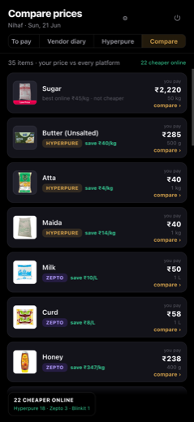
NATIVE iOS (build 5)
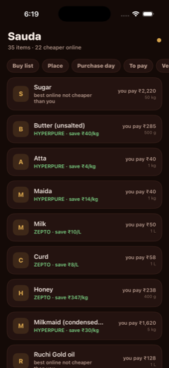
highimagery — PWA shows a real product PHOTO thumbnail per row (Sugar packet, Amul butter pack, atta bag, milk carton, curd, honey bottle). Native shows a colored rounded-square LETTER AVATAR (S, B, A, M, M, C, H, M, R) instead. → Replace the letter-avatar view with an AsyncImage product thumbnail keyed off the item's image URL/SKU; fall back to the letter avatar only when no image exists, matching the PWA's photo-first treatment.
highmissing-control — PWA each row has a 'compare ›' link/affordance in the bottom-right of the card (under the price block) to drill into the per-platform comparison. Native rows have no such affordance. → Add a 'compare ›' tappable link in the bottom-right of each row that navigates to the per-item platform comparison detail, matching the PWA.
highmissing-section — PWA has a bottom summary card: '22 CHEAPER ONLINE' with platform breakdown 'Hyperpure 18 · Zepto 3 · Blinkit 1'. Native has no bottom summary/breakdown card at all. → Add the bottom platform-breakdown summary card (total cheaper-online count + per-platform tally) pinned below the list, matching the PWA.
highlabel — Page title differs: PWA header is 'Compare prices'; native large title is 'Sauda'. → Set the navigation/large title to 'Compare prices' on this screen (Sauda is the app name, not the screen title).
medmissing-section — PWA header shows a context line 'Nihaf · Sun, 21 Jun' plus settings (gear) and power/logout icons in the top-right. Native shows only an orange status dot top-right and no user/date line. → Add the 'Nihaf · Sun, 21 Jun' context subtitle and the settings + power icons in the header to match the PWA chrome.
highcontrol — Top tab/segment set differs. PWA: 'To pay | Vendor diary | Hyperpure | Compare' (a 4-way segmented control with 'Compare' selected/highlighted gold). Native: a horizontally scrolling pill row 'Buy list | Place | Purchase day | To pay | Ve…' — different labels, different order, different style (pills vs segmented), and 'Compare' is not the selected/visible tab. → Align the tab model to the PWA: same labels and order, render as the PWA's segmented control with the active tab highlighted gold; ensure the Compare tab is the selected state on this screen.
medlabel — Subtitle/summary line wording differs. PWA: '35 items · your price vs every platform' (left) and '22 cheaper online' in green (right). Native: '35 items · 22 cheaper online' merged into the grey subtitle with no 'your price vs every platform' phrase and no green highlight. → Match PWA: show '35 items · your price vs every platform' on the left and '22 cheaper online' as a separate green-highlighted figure on the right.
medimagery — Platform badges render differently. PWA uses pill badges with platform-tinted backgrounds ('HYPERPURE' tan/gold pill, 'ZEPTO' purple pill). Native renders 'HYPERPURE' / 'ZEPTO' as plain green uppercase text with no pill/background. → Render the platform name as a colored pill badge (Hyperpure tan, Zepto purple, etc.) instead of plain green text, matching the PWA badge styling.
medlabel — Non-cheaper rows differ. PWA Sugar row shows a red 'Low Price' ribbon on the thumbnail plus 'best online ₹45/kg · not cheaper'. Native Sugar row shows 'best online not cheaper than you' (two lines, no price, no ribbon). → Include the best-online unit price ('best online ₹45/kg · not cheaper') and the 'Low Price' ribbon/badge treatment on non-cheaper rows to match the PWA.
lowlayout — Price block label wording/case differs slightly: PWA shows a small grey 'you pay' label above the bold price; native shows 'you pay ₹2,220' inline on one line. Quantity (50 kg / 500 g) placement is similar but native lacks the stacked 'you pay' caption above the price. → Stack a small grey 'you pay' caption above the bold price (right-aligned), with quantity below, matching the PWA price block layout.
lowcolor — Card/background treatment differs: PWA cards are near-black on pure-black background with subtle separation; native cards are dark-brown/maroon tinted on a brown background. → Match the PWA's neutral dark (near-black) card and background palette for this screen instead of the brown tint, unless the brown is an intentional Sauda brand token.
SAUDA · Settings
✗ mismatch
Native "Settings" tab renders a read-only display list, but the PWA Settings is a full inline-edit grid (price inputs, fix buttons, unit/store dropdowns, SKU/Loose chips) with a different header, sub-toolbar, chip set, and stat line — materially different UX.
WEB APP (source of truth)
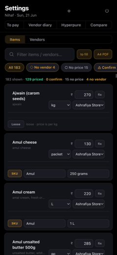
NATIVE iOS (build 5)
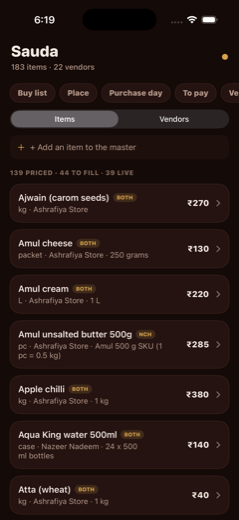
highlabel — Header title differs: native shows 'Sauda' (with subtitle '183 items · 22 vendors'); PWA shows 'Settings' (with subtitle 'Nihaf · Sun, 21 Jun'). The native screen is not even titled as the Settings screen. → Title the native Settings screen 'Settings' with the identity/date subtitle ('Nihaf · <weekday, date>'), not the generic 'Sauda' app header.
highcontrol — Top-right control differs: PWA has a power/logout icon (and a small settings/gear glyph) in the header; native shows only a small amber status dot and no power control. → Add the power/logout control (and gear glyph if present) to the native Settings header top-right.
highcontrol — Sub-toolbar / secondary tabs differ entirely. PWA has a row of tabs: 'To pay · Vendor diary · Hyperpure · Compare'. Native instead has scrollable filter chips: 'Buy list · Place · Purchase day · To pay · Ve...'. Different labels, different control type, different purpose. → Replace the native chip row with the PWA's four named sub-tabs (To pay, Vendor diary, Hyperpure, Compare) as a tab control, matching wording and order.
highcontrol — Search/filter affordance missing on native. PWA has a search field 'Filter items / vendors...' with a magnifier icon, plus 'to fill' and 'A4 PDF' action buttons on the same row. Native has no search field and no A4 PDF / to-fill buttons; it shows '+ Add an item to the master' instead. → Add the 'Filter items / vendors...' search field plus the 'to fill' and 'A4 PDF' buttons to native. Reconcile the '+ Add an item to the master' affordance (PWA appears to surface add differently).
highcontrol — Filter chip set differs. PWA chips: 'All 183 · No vendor 4 · No price 15 · Confirm…' (with diamond/circle/warning glyphs and counts). Native chips are the navigation chips noted above, not these data-filter chips. → Add the PWA data-filter chip row (All 183, No vendor 4, No price 15, Confirm…) with their glyphs and live counts.
medlabel — Stat/summary line wording and metrics differ. Native: '139 PRICED · 44 TO FILL · 39 LIVE'. PWA: '183 shown · 129 priced · 0 confirm · 15 no price · 4 no vendor'. Different counts, different metric names, different color emphasis. → Match the PWA summary line exactly: 'N shown · N priced · N confirm · N no price · N no vendor' with the same colored emphasis (green priced, amber/red for confirm/no-vendor).
highcontrol — Item rows are READ-ONLY on native but fully EDITABLE inline on PWA. PWA each row has: an inline price input box with ₹ prefix and a 'fix' button, a unit dropdown (kg/packet/L), a store dropdown (Ashrafiya Store), and SKU/Loose toggle chips. Native rows show static price text with a chevron only — no inputs, no dropdowns, no fix button, no SKU/Loose chips. → Rebuild native rows as the PWA inline-edit card: editable ₹ price field + 'fix' button, unit picker, vendor/store picker, and the SKU (with value field) / Loose toggle. The native chevron-to-detail pattern does not match the PWA inline grid.
highmissing-section — SKU / Loose row treatment missing on native. PWA shows a second line per item: a 'SKU' chip with the brand value (e.g. 'Amul') and pack size ('250 grams','1 L'), or a 'Loose' chip with 'loose · price is per kg'. Native folds pack info into a plain subline and has no SKU/Loose toggle chips. → Add the SKU/Loose chip + value-field row beneath each item, replicating the PWA's two-state (SKU brand+pack vs Loose per-unit) treatment.
medcolor — Badge treatment diverges. Native shows item-scope badges (BOTH / NCH) inline next to each item name; the PWA rows in view do not surface these scope badges (its emphasis is on the editable controls). Risk of native showing badges the PWA doesn't, or vice versa. → Confirm whether scope badges (BOTH/NCH) belong in the Settings list; if the PWA omits them here, remove from native, otherwise add them to the PWA-equivalent layout. Align exactly.
medlayout — Row density and structure differ: native rows are compact single-line-name + subline + right-aligned price; PWA rows are tall multi-control cards with separators and a second SKU/Loose line. Spacing, card height, and separators do not match. → Adopt the PWA's taller card layout with internal separators and inline controls so per-row height and structure match.
lowstate — Items/Vendors segmented toggle styling differs slightly: native uses a rounded pill segmented control with a lighter active segment; PWA uses an underline/box active-tab style. Same control, different visual treatment. → Match the PWA toggle visual style (active-tab box/underline) for the Items/Vendors switch.
DARBAR · Today · The Court
✗ mismatch
Same layout skeleton and data, but native diverges materially on accent color (blue vs PWA gold), row detail copy (drops salary/last-punch, reworded labels), badge treatment, button color, and the tab bar (blue + floating pill, missing the red "6" count badge).
WEB APP (source of truth)
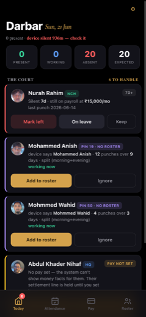
NATIVE iOS (build 5)
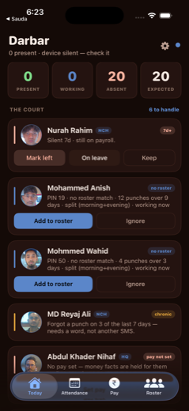
highcolor — Systemic accent mismatch. PWA primary accent is GOLD/AMBER (active 'Today' tab, 'Add to roster' buttons, '6 TO HANDLE' link). Native uses BLUE for all of these. Every primary control reads the wrong brand color. → Swap the native app's primary/accent tint from system blue to the Darbar gold/amber token (the same hue the PWA uses for buttons + active tab). Apply globally so buttons, active tab, and the 'to handle' link all turn gold.
highcontrol — 'Add to roster' primary button is gold/amber filled in PWA; native renders it blue filled. → Style the primary roster CTA with the gold accent fill (white/dark text) to match the PWA, not systemTint blue.
highcontrol — Tab bar differs in two ways: (a) PWA bottom bar is a flat full-width bar with the active tab in gold; native shows tabs inside a floating rounded pill container tinted blue. (b) PWA shows a red notification count badge '6' on the Today icon; native shows NO badge. → Match PWA tab-bar chrome: active tab gold, and add the red count badge ('6 to handle') on the Today tab icon. Reconcile the floating-pill vs flat-bar treatment to the PWA's flat bar (or confirm the pill is an intentional native adaptation).
highlabel — Nurah Rahim row drops data. PWA: 'Silent 7d · still on payroll at ₹15,000/mo' plus a second line 'last punch 2026-06-14'. Native: only 'Silent 7d · still on payroll.' — salary amount and the last-punch date line are missing. → Render the full payroll detail: append 'at ₹<salary>/mo' to the payroll line and add the 'last punch <date>' secondary line as the PWA does.
highlabel — No-roster rows use different lead text. PWA leads with 'device says <Name>' (e.g. 'device says Mohammed Anish'). Native leads with 'PIN 19 · no roster match'. The human-readable 'device says <name>' framing is replaced by raw PIN + status. → Match the PWA copy: lead the detail with 'device says <name>' for unmatched-roster employees instead of 'PIN N · no roster match'.
medcolor — 'working now' status renders green in the PWA but appears in default grey/white on native. → Color the 'working now' fragment with the green positive-status token to match the PWA.
medbadge — No-roster badge treatment differs. PWA shows a single purple uppercase pill combining 'PIN 19 · NO ROSTER'. Native shows a plain grey 'no roster' pill with the PIN as inline body text, not in the pill. → Use a purple uppercase pill matching the PWA, and combine PIN + NO ROSTER into the badge styling rather than a grey pill + inline text.
medlabel — Abdul Khader Nihaf description is truncated/reworded. PWA: 'No pay set — the system can't show money facts for them. Their settlement line is held until you set'. Native: 'No pay set — money facts are held for them' (shorter, different wording). → Use the full PWA copy for the no-pay explanation so the messaging matches verbatim.
medlabel — Status line omits the dynamic minute count. PWA: '0 present · device silent 936m — check it' (with '936m' and 'device silent' in red). Native: '0 present · device silent — check it' — the minutes-since value is missing and the red emphasis is absent. → Include the silent-duration value (e.g. '936m') in the status line and apply the red warning color to the 'device silent …' fragment as the PWA does.
lowlabel — Casing differs on two headers. PWA: 'THE COURT' / '6 TO HANDLE' (all-caps). Native: 'THE COURT' matches but '6 to handle' is title/lower case. → Uppercase the 'to handle' link text to match the PWA ('6 TO HANDLE').
lowlabel — Header date subtitle missing. PWA shows 'Sun, 21 Jun' beside the 'Darbar' title; native shows no date there. → Add the day/date subtitle next to the title (note: confirm this isn't purely a state/build difference, but the PWA clearly renders it as a header element).
lowcolor — 'Mark left' destructive button: PWA renders it red-tinted; native renders it dark/grey like the neutral buttons. → Give 'Mark left' the red destructive tint to match the PWA's visual hierarchy.
DARBAR · Attendance
✗ mismatch
Structure and stat cards match, but native drops employee photo thumbnails (uses letter/dot avatars), omits the legal-name + nickname treatment and the "no punches" label, reverses the Today/Month control order, and is missing the Today-tab notification badge.
WEB APP (source of truth)
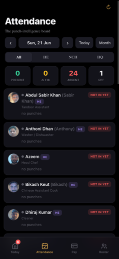
NATIVE iOS (build 5)
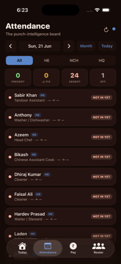
highimagery — PWA renders a real circular PHOTO thumbnail (headshot) for every employee row. Native renders only a small colored status dot with no avatar/photo at all (the screenshot shows a dot, not even a letter avatar in most rows). → Add a circular avatar view at the left of each AttendanceRow that loads the employee photo URL (same source the PWA uses, e.g. employee.photo from /api/hr-admin). Fall back to a letter/initial avatar only when no photo exists. Match PWA diameter (~36-40px) and circular clip.
highlabel — PWA shows full legal name with nickname in grey parentheses: 'Abdul Sabir Khan (Sabir Khan)', 'Anthoni Dhan (Anthony)', 'Bikash Keut (Bikash)'. Native shows only the short/nick name alone: 'Sabir Khan', 'Anthony', 'Bikash'. → Render the primary name as legal name, then append the nickname in a secondary grey color inside parentheses. Use the same name fields the PWA reads (full_name + nickname/display_name).
medlabel — Per-row punch state differs. PWA shows a dedicated 'no punches' line (grey) under the role. Native shows the role followed by a dash/arrow placeholder '· — → —' on the same role line and has no 'no punches' text. → When an employee has no punches, render the explicit 'no punches' subtitle line exactly as the PWA does, instead of the '— → —' time-range placeholder appended to the role line.
medcontrol — Date-bar trailing buttons are in opposite order and different state. PWA order is 'Today' then 'Month', both neutral/dark. Native order is 'Month' then 'Today', and 'Today' is rendered as a filled blue active button. → Swap the order so Today precedes Month, and match the PWA styling (both neutral dark pills; do not show Today as a filled blue active state when already on today).
medbadge — PWA tab bar shows a red notification badge with '6' on the Today tab. Native tab bar has no badge on Today. → Add the red count badge to the Today tab item, wired to the same count source the PWA uses (e.g. pending fixes / alerts count).
lowcontrol — Native shows an extra small blue status dot next to the refresh icon in the top-right; the PWA shows only the refresh icon. → Remove the standalone blue dot next to the header refresh control to match the PWA, or confirm it maps to a real PWA element; otherwise drop it.
lowcolor — Row background/contrast differs slightly: PWA rows sit on near-black cards with subtle separation; native rows have a warmer dark-maroon tint and rounded pill containers. The HE badge is a blue/violet pill in both, but native row chrome reads warmer. → Align row container background to the PWA's near-black card token and spacing; verify the maroon tint isn't bleeding from a wrong surface color variable.
lowlayout — Row density differs: native fits ~8 rows in the viewport, PWA fits ~5 — native rows are shorter because they lack the photo + second name line + 'no punches' line. This is a consequence of the imagery/label deltas above. → Resolving the avatar + legal-name + 'no punches' deltas will naturally bring row height/density to parity; verify after those fixes.
DARBAR · Pay
✗ mismatch
Same data and rows, but native diverges on accent color (blue vs PWA gold), control order (filter chips vs toggle/board swapped), header subtitle, badge styling, and a missing "month complete" segment in row subtext.
WEB APP (source of truth)
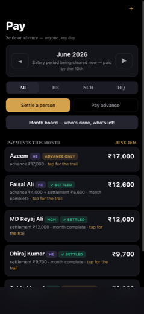
NATIVE iOS (build 5)
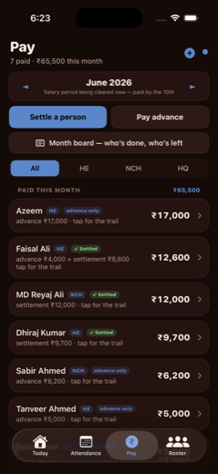
highcolor — Whole-screen accent color differs. PWA uses gold/amber as the primary accent: the selected 'Settle a person' toggle is gold-filled, the 'JUNE 2026' month label is gold, the section total 'JUNE 2026' is gold, and the month-nav arrows are boxed. Native uses BLUE as the accent: selected 'Settle a person' is blue-filled, the top-right (+) is blue, and the section total '₹65,500' is blue. → Swap the native accent token from blue to the PWA gold/amber (the Darbar brand gold). Apply to: selected segmented-control fill, month-label text, section-total text, and the add (+) button tint.
highlayout — Control ORDER is swapped. PWA order top-to-bottom: month selector -> All/HE/NCH/HQ brand filter chips -> Settle/Pay-advance toggle -> 'Month board' button. Native order: month selector -> Settle/Pay-advance toggle -> 'Month board' button -> All/HE/NCH/HQ filter chips. → Reorder the native stack to match PWA: move the All/HE/NCH/HQ filter chip row to sit directly under the month selector and above the Settle/Pay toggle + Month-board button.
medlabel — Header subtitle differs. PWA shows the tagline 'Settle or advance — anyone, any day' under the 'Pay' title. Native replaces it with a stat line '7 paid · ₹65,500 this month'. → Restore the PWA subtitle 'Settle or advance — anyone, any day' as the header subtitle. If the paid count/total is wanted, it should live in the section header (which PWA already does), not replace the tagline.
medlabel — Section header label + value differ. PWA: 'PAYMENTS THIS MONTH' with 'JUNE 2026' on the right. Native: 'PAID THIS MONTH' with '₹65,500' on the right. → Change native section label to 'PAYMENTS THIS MONTH' and put the month ('JUNE 2026') on the right instead of the total amount, to match PWA.
medmissing-section — Row subtext is missing the 'month complete' segment. PWA settled rows read e.g. 'advance ₹4,000 + settlement ₹8,600 · month complete · tap for the trail' and 'settlement ₹12,000 · month complete · tap for the trail'. Native shows the same rows WITHOUT 'month complete ·' (e.g. 'advance ₹4,000 + settlement ₹8,600 · tap for the trail'). → Append the ' · month complete' segment to the row subtext for settled rows so it reads '<amounts> · month complete · tap for the trail', matching PWA.
medbadge — 'Advance only' badge styling differs. PWA renders it uppercase ('ADVANCE ONLY') in an amber/gold pill. Native renders it lowercase/sentence-case ('advance only') in a muted purple/blue pill. → Match PWA: uppercase the label text, and use the amber/gold pill background for the advance-only badge (distinct from the green 'Settled' badge).
lowcontrol — Top-right header controls differ. PWA has a single small amber plus (+) in the far corner. Native has a blue circled (+) plus a second small dot/indicator to its right. → Reduce native to the single add (+) action matching PWA, tinted gold; remove the extra dot indicator (or confirm it's an intended status element and drop it for parity).
lowcontrol — Month-nav arrow treatment differs slightly. PWA encloses the prev/next arrows in rounded square buttons; native shows bare triangular arrows with no button chrome. → Wrap the native month-nav arrows in the same rounded-square button chrome used by PWA for visual parity.
lowcontrol — Native shows a bottom tab bar (Today / Attendance / Pay / Roster). The PWA screenshot shows no bottom tab bar in this viewport. → Accept — intentional adaptation. Native uses a tab bar for top-level navigation; this is the expected platform pattern and not a parity defect.
DARBAR · Roster
◑ minor deltas
Native reproduces the roster structure (header, filter chips, cost card, photo/letter-avatar rows, rate fields, 4-tab bar) faithfully; deltas are cosmetic — cost-card layout/color, brand-badge colors, active-chip/tab styling, a missing refresh control and a missing Today notification badge.
WEB APP (source of truth)
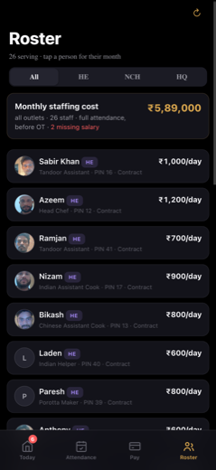
NATIVE iOS (build 5)
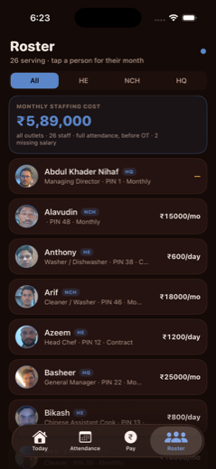
medlayout — Monthly staffing cost card differs in layout. PWA: sentence-case title 'Monthly staffing cost' with the amount (₹5,89,000) on the RIGHT of the title row, then a sub-line 'all outlets · 26 staff · full attendance, before OT' and '2 missing salary' in orange. Native: UPPERCASE label 'MONTHLY STAFFING COST', amount on its OWN line below in large blue, and the descriptor + '2 missing salary' merged into one muted grey line. → Match PWA: keep title sentence-case, place the amount inline on the right of the title row (not on a separate line), and split the descriptor so '2 missing salary' is its own colored token, not folded into the grey descriptor line.
medcolor — '2 missing salary' is rendered in alert orange/red on the PWA but appears in the same muted grey as the rest of the descriptor on native — the warning signal is lost. → Color the 'N missing salary' fragment with the warning/orange accent token used by the PWA so it reads as an alert.
medcolor — Brand badge colors diverge. Native color-codes badges (HQ=blue, HE=amber/brown, NCH=teal); PWA renders all brand badges in a single muted purple/grey pill regardless of brand. → Decide on the canonical treatment and match the PWA: render all brand badges with the single muted purple/grey style (or, if color-coding is intended, confirm with owner — but for 1:1 parity match PWA's uniform badge).
medcontrol — PWA shows a refresh/reload control (circular-arrow icon) in the top-right corner. Native shows only a small blue status dot in the top-right and no refresh control. → Add a top-right refresh control (circular-arrow icon, pull-to-refresh equivalent) matching the PWA, or wire pull-to-refresh and remove the unexplained blue dot.
lowstate — PWA bottom tab bar shows a red notification count badge ('6') on the Today tab; native bottom bar has no badge on Today. → Wire the Today-tab notification count badge so it mirrors the PWA's pending-count badge.
lowcontrol — Active filter chip styling differs. Native 'All' chip is a solid bright-blue filled pill; PWA active chip is a subtle translucent grey pill with bold text. Inactive chips match. → Restyle the active filter chip to the PWA's subtle translucent/grey filled pill rather than the saturated blue fill.
lowcontrol — Active bottom-tab styling differs. Native active tab (Roster) is a filled rounded pill containing icon+label; PWA active tab (Roster) is just gold/amber-tinted icon+label text with no pill background. → Match PWA: active tab = accent-colored icon+label with no pill background (use the amber/gold active tint), drop the filled pill.
Source of truth = the deployed web app (sauda.hnhotels.in / darbar.hnhotels.in). Native is matched against it. Regenerate the native side any time with ops/ux-catalog/tools/capture-native.sh (boots the HN-iPhone17Pro simulator, builds both apps from their pinned commits, screenshots every screen). See tools/MANIFEST.md.